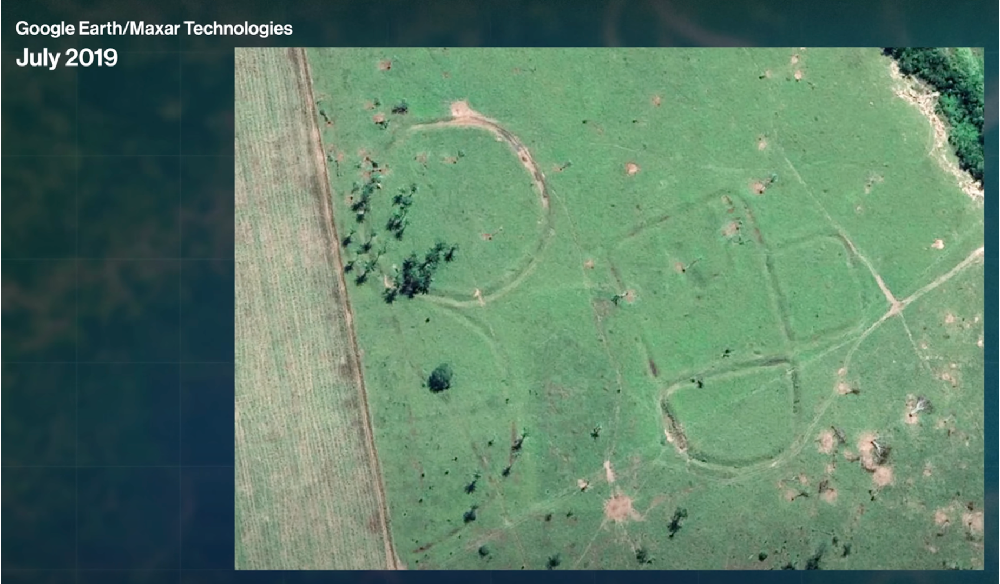
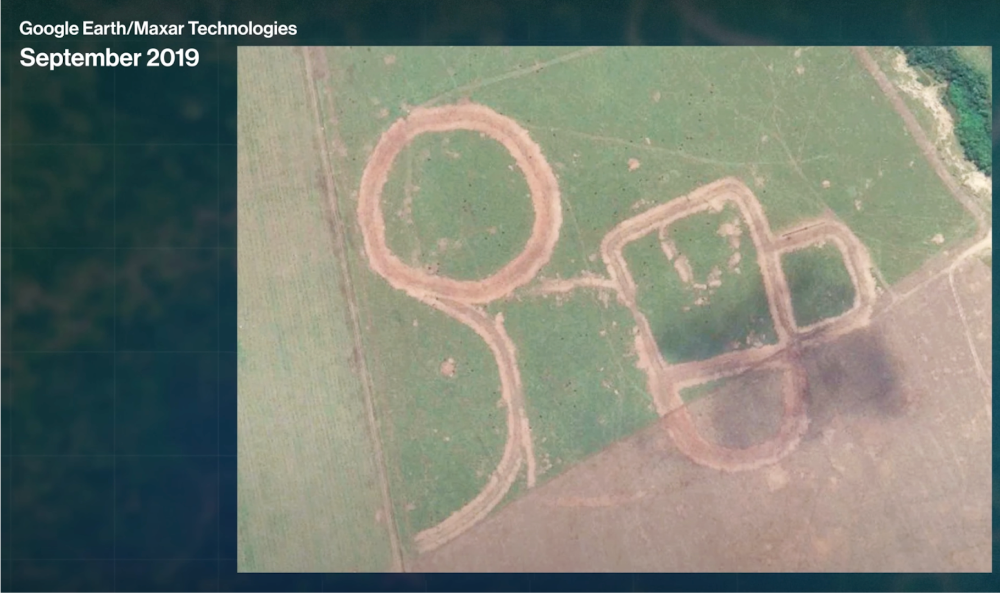

6 Week 7 Classification I
6.1 Summary
- This week we learned mainly about how classification has been applied in remote sensing as well as what different classification approaches are available for use with remote sensing data
- One of the more well known examples of this was using classification to identify urban green spaces. I have used this data before as it is a class available in the Copernicus 5 yearly classification dataset available from the EU. (maybe look at how they classify these layers).
- Another example of a well known use of classification was in tracking illegal foresting in Brazil. Hansen et al. (2013) developed a methodology for analysing high-resolution satellite imagery for evidence of illegal logging, which has helped law enforcement in Brazil combat this. There is also another example of where local authorities are trying to preserve Geoglyphs (national monuments or ancient sites and structures) that was shown on Bloomberg (here) that also gives some more background.
Before:

After:

In terms of how we can apply classification on remote sensing images ourselves, we covered both supervised and unsupervised learning. - Supervised learning: we looked at Classification and Regression Trees (CARTs) which I have also covered in the Data Science module as well as the use of SVMs. Looking at tree based methods we learned about how a single CART model works and the underlying logic used to determine a class, as well as some of the evaluation techniques such as gini-impurity, which as I learned is also how the hierarchy of variables used in the splitting of the tree is decided on. Andy made the point that tree methods are highly susceptible to overfitting and practitioners need to be careful about the number of samples in each split. One proposed way of avoiding having a model that is overfitted to the training data was to ensure a minimum number of samples of x (i.e. 20 samples for example). This is similar to the parameter available to clustering algorithms like HDBSCAN and DBSCAN. Another approach to overcome this risk of overfitting is to consider using random forests as opposed to single tree models. Random forests are less likely to overfit due to their ensemble nature, with different decision rules (logic) being used by different trees in the forest, however the trade-off here is the reduction in interpretation. I believe there is a way to see and visualise each tree, however, in practice this is tedious and time consuming. Perhaps someone should develop a python package / R package that can aggregate the decision rules and provide the user with a higher-level summary of what is going on in the forest. We also covered support vector machines, which I have come across before but not used much in my career. I’m not sure why SVMs aren’t as popular as other methods but perhaps they sit in an awkward zone between highly interpretable methods like linear regression and highly performant methods like neural networks. - Unsupervised learning: we covered k-means for classification with some variants such as cluster busting. K-means is an unsupervised learning approach that I’ve come across both in QUant Methods as well as Data Science. Typically it is the default option used for most unsupervised learning as it is intuitive and relative easy to deploy (computationally) at least compared to other unsupervised techniques like Gaussian Mixture Methods. However it does make a lot of assumptions mainly it assumes the means identified in the clusters conforms to the structure of the data so for example if the data does not conform to a convex shape i.e. radial or straightline result in meaningless clusters.
6.2 Application
Reading the Hansen paper (Hansen et al., 2013) published in Science is quite interesting as it provides evidence of the extent of global deforestation over a decade and as a result of it’s methods allows for nuanced interpretation of headline values i.e. being able to differentiate permanent forestry in Russia vs more seasonal forestry practices in Sweden. By carrying out the analysis at the pixel level the analysis makes a reasonable attempt to provide granularity while being from 30m images, allowing them to be able to comment on specific places rather than cities for example. The use of a global dataset like Landsat, which is available at little / no cost to researchers and policymakers, gives anyone who is looking to carry out any monitoring of deforestation in their areas of interest a relatively straight-forward approach to do this, as is highlighted by the author’s mentioning of the Brazilian state policies in regard to deforestation. However, regarding the underlying methodology used to determine whether deforestation has occurred, by using a binary variable in most cases (although the authors make clear they also look at change in variation within the same pixel) there is an underlying tension, as forest growth does not necessarily follow pixel patterns meaning there may be some unintended results that may occur around forest boundaries when determining whether a pixel is still forest when say it has reached 49% of the selected pixel. That said perhaps this is more a limitation of available technology and such an approach wouldn’t carry as much of a risk.
6.3 Reflection
The lectures on classification in remote sensing have been interesting for me given my previous job in consulting and data science to see how it is approached in a different domain. The applications make sense to me intuitively i.e. pixel classification used to say whether a pixel has x or y type of land cover. However the examples of where I’ve come across the use of remote-sensing data has been in the sustainability space and this has tended to use remote-sensing as an input in order to identify areas for policy interventions, the most common examples being rewilding, peatland assessment or biodiversity analysis. I would have thought insurance companies and others would use remote-sensing data such as land cover classifications regularly but perhaps the domain specificity of the analytical approaches / software lead to other options (I’ll send someone there on a plane to verify this for me - which is something a client previously said) being preferred. So I find myself wondering which organisations, aside from researchers, policy–makers, regulators, sustainability teams and maybe NGOs who would benefit from remote-sensing classification data? Perhaps agriculture, or financers of agriculture probably would gain some benefit from these techniques but the methods would have to be informed by domain experts to get their buy-in and ongoing use. As with all data science methods, either proving it works in terms of increased yields or decreased soil nutrient depletion would need to be justified to overcome the BAU default of most organisations, which remote-sensing data with it’s relatively long-run temporal data has an advantage, and with agricultural land parcels being relatively large spatial resolution shouldn’t be too much of an issue relative to very specific requests like one I’ve had before which was to classify every parking space from satellite imagery.
6.4 References
Hansen, M.C. et al. (2013) ‘High-Resolution Global Maps of 21st-Century Forest Cover Change’, Science, 342(6160), pp. 850–853. Available at: https://doi.org/10.1126/science.1244693.